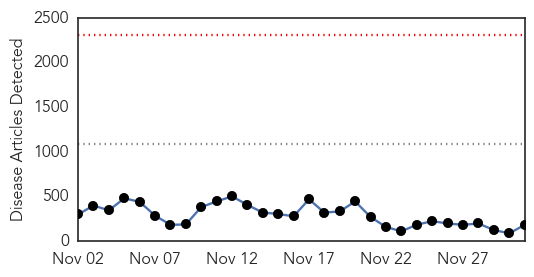
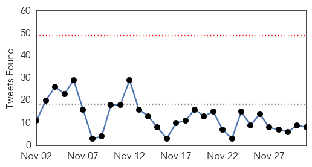
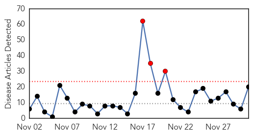

Ebola
30-Day Web Trend
0 alerts, 0 warnings

30-Day Twitter Trend
4 alerts, 0 warnings

Article Locations
Article Confidences

Top Articles:
- 1.000
- WHO will miss Ebola targets it set for Dec 1
- 1.000
- Healthcare apartheid is unacceptable – there can be no ‘them and us’
- 1.000
- WHO Will Miss Ebola Goals It Set for Today
- 1.000
- WHO Misses Ebola Targets it Set for December 1
- 1.000
- WHO Will Miss Ebola Targets it Set for Dec 1 — Naharnet
- 1.000
- Where Did Ebola Start?
- 1.000
- WHO Will Miss Ebola Targets It Set For Dec. 1
- 1.000
- WHO praises 'unprecedented' support to curb virus but warns of remaining hotspots
- 1.000
- World meeting most Ebola goals, but work remains
- 1.000
- WHO to miss Ebola targets it set for Dec. 1
- 1.000
- Connecticut Hospitals Have Spent $5 Million to Prepare for Ebola
- 1.000
- Some Ebola outbreak goals met, but threat still looms
- 1.000
- Head of UN states: 'There is still a huge risk of Ebola spreading'
- 1.000
- Mali President Declared No More Ebola Cases in Mali
- 1.000
- SA has capacity and experience to contain Ebola
- 1.000
- Ebola in retreat in eastern Sierra Leone
- 1.000
- U.N. agency: Number of Ebola cases now tops 16,000
- 1.000
- The virus travels: Karachi receives its first suspected Ebola patient from Liberia
- 1.000
- Huge risk of Ebola spread, warns U.N.
- 1.000
- Dangerous job of grave digging in Ebola hit Sierra Leone
- 0.999
- Correction: Ebola-West Africa story
- 0.999
- Ebola: CDC throws cold water on talk of 'airborne' transmission
- 0.999
- No more Ebola cases in Mali, says president
- 0.999
- UCSF doctor returning from Liberia sees improvement in Ebola outbreak, but says rural areas remain vulnerable
- 0.999
- Targets being met against 'stupid' Ebola, claims WHO
- 0.999
- No new cases Of Ebola in Mali
- 0.999
- Ebola crisis: WHO upbeat on targets
- 0.999
- As Ebola Scare Dies Down, Infectious Disease Prep Wanes
- 0.999
- WHO will miss Ebola targets, had set Dec 1 to isolate 70 per cent of patients
- 0.999
- Correction: Ebola-West Africa story
- 0.999
- Ebola virus suspect shifted to hospital in Pak
- 0.998
- WHO Warns Sierra Leone about Ebola Containment
- 0.998
- WHO will miss Ebola target date
- 0.998
- Liberia, Sierra Leone fall far short of reaching WHO goals on Ebola
- 0.998
- WHO lowers Ebola toll by nearly 1,000
- 0.998
- Liberia wrongly added 1,000 deaths to Ebola toll, WHO claims
- 0.998
- Ebola: UN health agency advises male survivors to abstain from sex for 3 months
- 0.998
- Two dead from Ebola-like Lassa fever in Benin
- 0.998
- WHO announces progress on Ebola, less deaths than thought
- 0.998
- Ebola efforts on target in Liberia and Guinea, officials say
- 0.998
- Interview: Dealing with Ebola
- 0.998
- WHO lowers Ebola toll by nearly 1,000 after Liberia counting ‘error’
- 0.998
- Ebola Watch: Spread of the virus is still a "huge risk"
- 0.998
- UPDATE 2-Sierra Leone lags in Ebola fight, but prognosis is very good
- 0.997
- Ebola cases no longer rising in Guinea, Liberia, UN health agency reports
- 0.997
- McLaren Bay Region officials talk preparedness: If not Ebola, 'there will be something later on'
- 0.997
- What W. Africa can teach us about Ebola
- 0.997
- WHO isolates, treats 70 pct of Ebola infected cases in Africa
- 0.997
- WHO Isolates, Treats 70% of Ebola Infected Cases in Africa
- 0.997
- French president cheered in Ebola-stricken Guinea
Showing top 50 articles...
Top Tweets:
- 0.968
- RT: Effective action required as Ebola surges in Sierra Leone. http://t.co/kUio8vHkGA Ebola GlobalDev TackleEbola philant…
- 0.945
- RT: "Ebola, Ebola, invisible enemy..." been humming this all afternoon. https://t.co/mpXty3qS07 AfricaStopEbola
- 0.943
- Finding the Ebola virus' achilles heel http://t.co/IAEayMhV8S
- 0.929
- Le virus Ebola a fait près de 7 000 morts http://t.co/HaTvN3t032 via
- 0.890
- RT: Health officials hold suspected Ebola patient at Karachi airport Pakistan
- 0.822
- Lutte contre Ebola : l'@UNICEF sensibilise les communautés contre ce fléau en Guinee http://t.co/XgfkuYEwmz
- 0.785
- RT: [DAILYMAIL] Ebola death toll hits 7,000 as WHO misses ambitious targets to contain deadly disease http://t.co/Lp4JNacAxD E…
- 0.744
- Livelihoods are threatened in Guinea, Liberia and Sierra Leone by Ebola http://t.co/pnzAXG3Bkl
- 0.741
- Here's an Ebola puzzle for you: If the virus isn't airborne, why do doctors and nurses need to wear full... http://t.co/k8YvPeFXRW
- 0.720
- Ebola outbreak: 'Death on an almost industrial scale' http://t.co/M0hDhayYY8
- 0.693
- Ebola death toll up to nearly 7,000, Sierra Leone needs more beds http://t.co/hjcGQHJKBa TackleEbola
- 0.678
- WHO Ebola targets missed in parts of Liberia, Sierra Leone http://t.co/0PtwGbCK5D
- 0.678
- Locking Ebola out of SierraLeone jails http://t.co/BUUC6mwInU
- 0.660
- Test Your Medical Smarts: Does This Patient Have Ebola? | @nprGlobalHealth http://t.co/rNfYoXHKrk
- 0.657
- RT: Breaking: Suspected Ebola patient, traveled from Liberia to Pakistan, admitted in Isolation Ward of Jinnah Hospital
- 0.653
- .@UNMEER: The longer Ebola is in W. Africa, the more likely the virus will appear elsewhere in the world. http://t.co/pNcNsSMCl5
- 0.620
- Ebola haemorrhagic fever | @TheLancet http://t.co/HezzGwTrwX
- 0.596
- 2/2) On zero Ebola cases by Christmas in Liberia ECM Peter Graaff: going to be tough, but it's possible - http://t.co/UXC9bwyOd5
- 0.534
- RT: Isolate Ebola not the affected countries- AU Director of social affairs AUonEbola UnitedAgainstEbola
- 0.524
- RT: [BBC] Sierra Leone foreign Ebola relief operation criticised http://t.co/XBN4o8NLaD EBOLANEWS
- 0.510
- RT: .@BBCAndrewH's exclusive report on Sierra Leone's Ebola fight. Watch in full on at Six http://t.co/rgaopc2Fao
Influenza
30-Day Web Trend
3 alerts, 0 warnings

30-Day Twitter Trend
1 alerts, 0 warnings

Article Locations
Article Confidences
Top Articles:
- 0.998
- National Influenza Vaccination Week
- 0.996
- Learning health and prevention tips can reduce flu
- 0.989
- WATCH: Okanagan residents encouraged to help stop spread of the flu - BC
- 0.983
- Bird Flu Outbreak in Kerala Comes to an End? 50,000 Poultry Birds to be Culled on Monday
- 0.983
- News Centre
- 0.978
- Grey-Bruce has first flu case
- 0.955
- Doctors split on mandatory flu vaccines for health-care workers
- 0.938
- Gov’t advises to bundle up, National, Phnom Penh Post
- 0.920
- Flu shot rate low among Vancouver health-care workers despite deadline
- 0.883
- San Diego County health officials remind residents to get flu shots
- 0.863
- H5N1 avian influenza kills three in Egypt
- 0.830
- Bird flu under control in Kerala; 1.80 lakh birds culled, around 3 lakh persons under observation
- 0.827
- New Dutch Cull Ordered After Bird Flu Confirmed As H5N8
- 0.817
- New Dutch cull ordered after bird flu confirmed as H5N8
- 0.801
- San Diego 6 News, The CW (XETV) – News, Weather, Traffic, Sports
- 0.685
- Bruce County Resident has Season's first Confirmed Flu
- 0.595
- World AIDS Day marked around world
- 0.571
- Novartis flu vaccine on hold in Italy after suspicious deaths
- 0.549
- Genetic characterisation of influenza B viruses detected in Singapore, 2004 to 2009
- 0.537
- New bird flu case in Netherlands
Top Tweets:
-
No tweets found for Dec 01, 2014